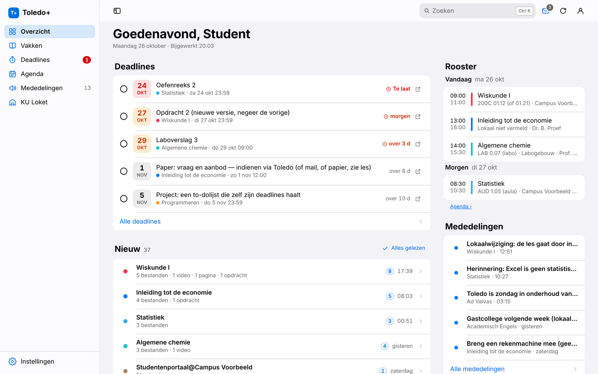
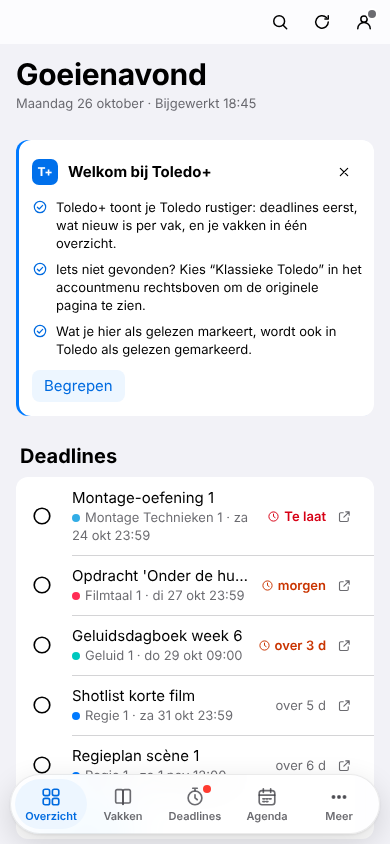
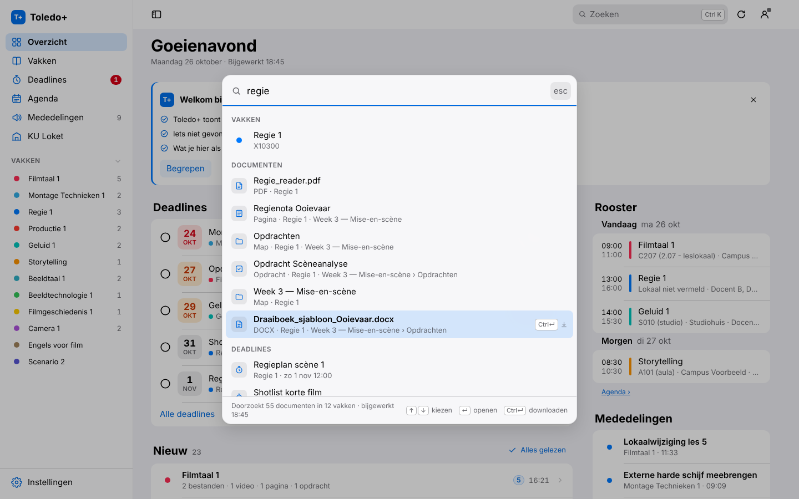
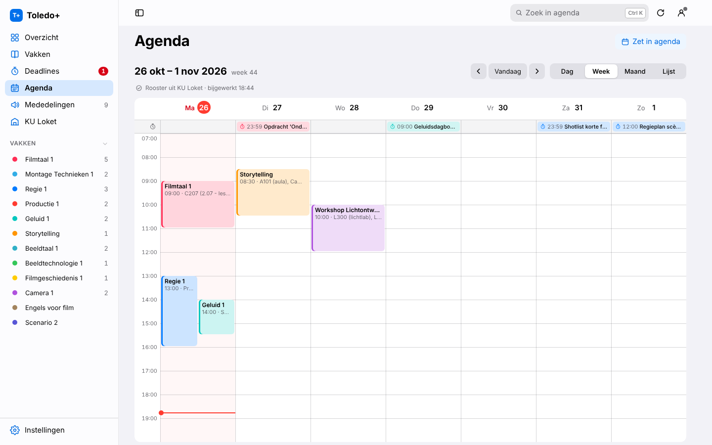
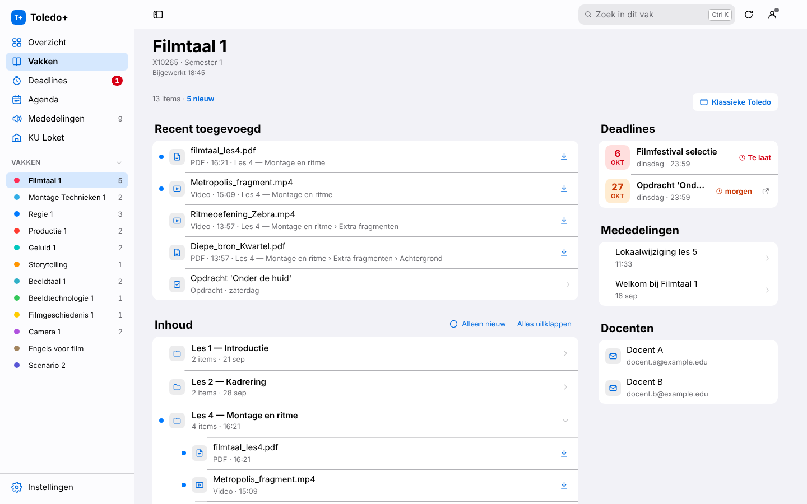
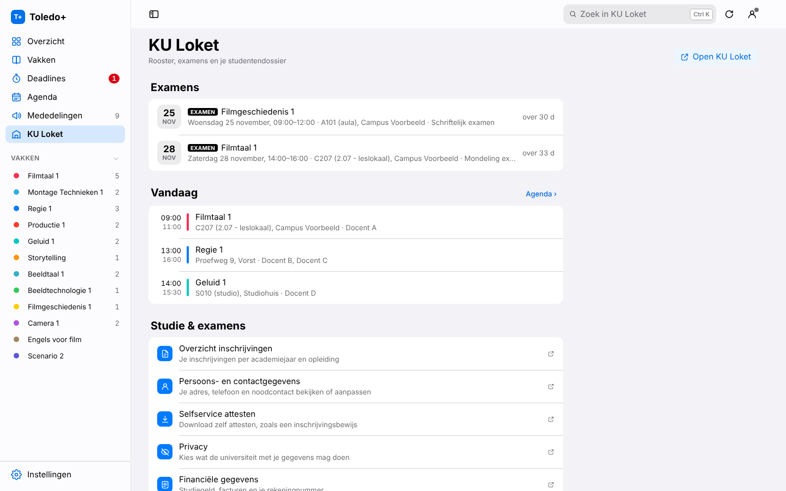

Toledo, but calm.
Toledo+ turns Toledo and KU Loket into one calm app. Your deadlines first, what’s new per course, your full timetable, and everything searchable with a single key.
Version 1.1.0Free and open sourceUnofficial student project


Everything you need.
Nothing that distracts.
Toledo+ reads what Toledo already shows you and puts it in a shape that makes sense to students.
Deadlines first
Toledo, Ultra and your own tasks in one list, with the time left. Tick them off, and add them to your calendar (.ics) in one click.
New, per course
No endless notifications: one line per course, like “2 files · 1 video”. Expand what you care about.
Every course, one shape
All files and folders in a clear tree, search across the whole course and download with one click.
⌘K searches everything
Find that one document across all your courses, plus deadlines and announcements. The index stays on your device.
Your full timetable
An Agenda with your KU Loket timetable by day, week or month, together with your exams and deadlines.
KU Loket, no hunting
Exams, today’s timetable and shortcuts to enrolments, certificates and more.
Read means read
What you mark as read in Toledo+ is marked as read in Toledo too. You can turn this off.
Make it yours
Nederlands, English or Français. Light or dark, your own accent colour and density, nicknames and colours per course.
One key. Every document.
Press ⌘ K (or Ctrl K) and type. Toledo+ searches the folders of all your courses, and ⌘ ↵ downloads right away.

Your whole week at a glance.
Your full KU Loket timetable, with room and teacher, next to your deadlines and exams. By day, week or month, and in your own calendar if you like.

Every course, the same calm.
Recently added at the top, the full content as expandable folders below. Deadlines, announcements and teachers sit alongside.

The rest of student life.
Your exams with date and room, today’s classes and the KU Loket pages you actually use, without clicking through menus.

Ready in a minute.
Install the extension
Download Toledo+ and load it into your browser. No app, no account, nothing to remember.
Sign in as usual
Open Toledo and sign in with your own KU Leuven login. Toledo+ never sees your password.
Your data stays with you
Toledo+ shows what Toledo and KU Loket already show you. Your courses, deadlines and files go nowhere else.
Your Toledo stays in your browser.
Toledo+ has no accounts and doesn’t know who you are. Your courses, deadlines and documents only travel between your browser and Toledo or KU Loket.
No tracking of who you are. No analytics services, no ads, no cookies.
Your Toledo data stays local. Courses, documents and the search index live only in your browser.
Your password stays yours. Toledo+ uses the session you’re already signed in with.
Just an anonymous daily ping. A random id, version, browser and language. Turn it off in Settings → Privacy.
Installed in four steps.
You install Toledo+ yourself, straight from GitHub. It takes about a minute.

Toledo+ 1.1.0
For Chrome, Edge, Brave, Arc, Opera and Vivaldi
Unzip the file
Put the folder somewhere permanent, for example
Documents/toledo-plus. Leave it there: your browser loads Toledo+ from that folder.Open the extensions page
Type
chrome://extensionsinto the address bar. In Edge it’sedge://extensions.Turn on Developer mode
In Chrome the switch is at the top right; in Edge it’s on the left, below the menu.
Choose “Load unpacked”
Select the
toledo-plusfolder (the one withmanifest.json). Then open Toledo and sign in as usual.
Which browser?
- Chrome
chrome://extensions - Microsoft Edge
edge://extensions - Brave, Arc, Opera, VivaldiWorks the same, through their own extensions page (e.g. brave://extensions)
- FirefoxNot supported (yet): Firefox uses its own extension format
- SafariNot supported (yet): Safari needs a separate Mac app
Updating
Toledo+ shows a notice when a new version is out. Then:
- Download the new zip.
- Replace the contents of your
toledo-plusfolder with the new files. - Click ↻ (reload) on Toledo+ on the extensions page and reload Toledo. Your settings are kept.
A warning about developer mode?
Chrome may mention at startup that developer-mode extensions are active. It does that for every extension that doesn’t come from the Chrome Web Store, not because something is wrong. It’s safe to keep Toledo+: the code is public on GitHub and the extension only has access to Toledo, KU Loket and api.toledoplus.be. Just close the notice.
Anonymous usage ping
To know how many students use Toledo+ and which versions are still around, Toledo+ sends one anonymous ping a day to api.toledoplus.be: a random install id, the version, the browser and the language. No name, no student number, no Toledo data; your IP address is not stored. Turn it off in Settings → Privacy or right in the welcome card. Read the privacy policy
Good to know.
Is this an official KU Leuven app?
No. Toledo+ is an independent student project. It is not affiliated with KU Leuven, LUCA School of Arts or Blackboard/Anthology. It simply uses your Toledo session, just like your browser does.
Is my data safe?
Toledo+ only reads what Toledo and KU Loket already show you, through your own session in your own browser. Your settings, a cache and the search index live in your browser’s storage. There are no analytics services or trackers, and Toledo+ never sees your password. Only an anonymous daily ping (random id, version, browser, language) goes to api.toledoplus.be; turn it off in Settings → Privacy. The full source code is on GitHub.
Does it work for every programme in the KU Leuven Association?
Toledo+ works wherever you use Toledo at toledo.kuleuven.be, including the Blackboard Ultra course pages. It’s tested at KU Leuven and LUCA School of Arts. The timetable, exams and KU Loket page come from KU Loket; if you don’t have access to it, you’ll see the planning from Toledo instead.
Something works differently in your programme? Let us know.
Does it cost anything?
No. Toledo+ is free and open source (MIT licence). No ads, no subscription, no account.
Why isn’t it in the Chrome Web Store?
Toledo+ is distributed directly through GitHub. That way every new version is available right away and you can see exactly which code you install. The only downside is the developer-mode notice, which you can simply close.
How do I report a problem or idea?
On GitHub: choose “Bug” or “Idea” and describe what you saw. Please don’t include real personal data (names, e-mails, student number or course content) in your report or screenshots.
How do I turn it off?
Choose Classic Toledo in the account menu at the top right and you’ll see the original page right away. The Toledo+ button turns it back on. Want it gone completely? Remove the extension at chrome://extensions or edge://extensions; that also erases everything Toledo+ stored.
Ready for a calmer Toledo?
Free, open source and installed in a minute.